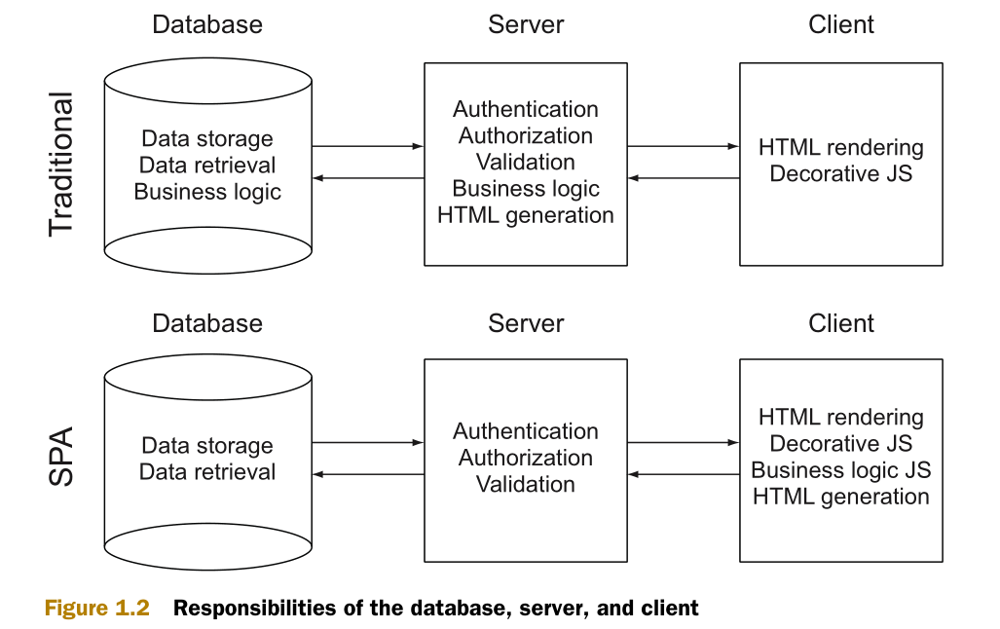

缘由
随着 Web 应用的发展，前端 Single Page Applications（SPA, 单页应用程序）越来越流行，“前后端分离”开发模式也越来越成熟。以下通过几张图加强对相关概念的理解。
（图 1：传统架构和 SPA 架构中数据库、服务端、客户端的职责）

（图 2：RESTful 架构）
（图 3：Web API vs MVC）
做为“前后端分离”开发模式下的前后端数据通信的“桥梁” —— API，接口的规范化也显得越来越重要，实际项目实践中已遇到以下诸多问题：
- 无接口文档，口述沟通
- 接口功能不完善就提前进入联调
- 接口功能拆分的维度不合理
- 接口功能测试依赖前端界面
- 接口格式规范存在多种：WCF Server（.svc） 和 Web API
- 接口请求方式无语义，比如全部是 POST
- 不同状态下，同一接口返回的数据结构不一样
- 接口返回的数据值类型不统一，有些为 String，有些为 Number
- 接口状态标识及业务返回码混乱
- 接口数据变更没有通知相关前端人员
- 各项目组接口定义规则因人而异（比如：接口的命名规则；字段的命名规则；标识的规则；分页、统计、超时、授权通用功能设计...）
- ...
基于上述原因，所以“前后端分离”开发模式下的《后端交互规范》文档就显得至关重要了。